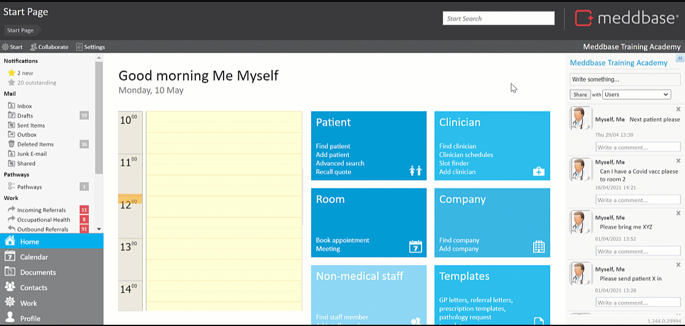
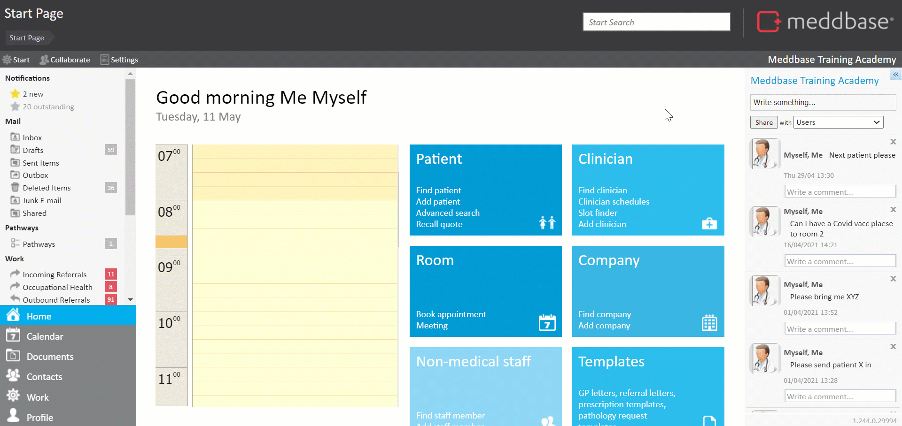
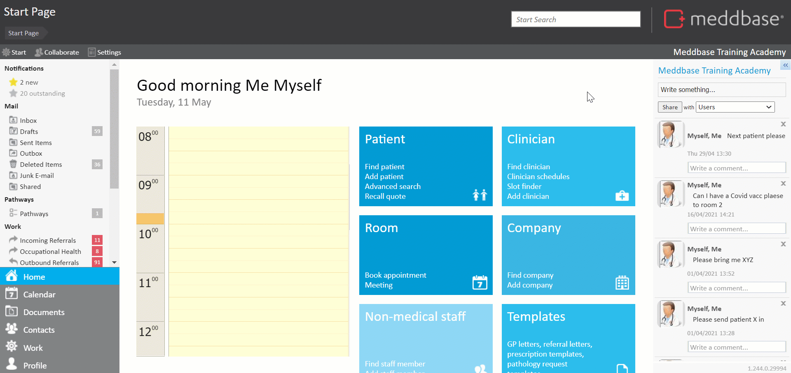

This article will walk you through the process of assigning different codes for stock controlled services i.e. products and/or vaccines. Then subsequently using these codes to receive and dispense stock, and perform stocktakes utilizing a barcode scanner. The assumption here is that the Stock Control feature is already set up.
Click here for a detailed article on setting up Stock Control.
The functionality described in this article is achieved with a basic USB barcode scanner
Assigning codes to Products and/or Vaccines
There are different types of codes you can assign to a product and/or vaccine. These are:-
Barcode - available on the packaging of a product or vaccine, typically representing an individual item when receiving, dispensing or stocktake.
Package barcode - if items are delivered in bulk e.g. box of 1000 units, the package barcode will represent the entire container and allow for bulk receiving, dispensing or stocktake.
Supplier code - when dealing with multiple suppliers and these suppliers use their own codes on invoices, the supplier code allows the system to identify the item a given supplier refers to with a specific code: e.g. - for Supplier A, code 12345 means Item A - for Supplier B, code 12345 means Item B
Additional code - this option allows assigning a custom code to a product and/or vaccine and use it when receiving, dispensing or stocktaking.
To assign a code to a product and/or vaccine:-
From the Start Page navigate to Admin > Service Management
Expand the Product or Vaccinations folder and click on an existing product or vaccine
In the Service Codes section select the relevant code type and assign the code value*.
*The numerical value can be assigned manually, or in case of barcodes, scanned in using the scanner (click in the Service Code field and scan the barcode)

Save your changes.
Receiving, dispensing and stocktake with a barcode scanner
Having assigned codes to relevant products and/or services, you can start using the barcode scanner to move stock.
For the purpose of this article, 2 products have been configured: 1. Name: Product 1, Control type: Stock Control, Unit: Pack, Service code: 5060592005420, Code type: Barcode 2. Name: Product 2, Control type: Batch Control, Unit: Ampoule, Service Code: 036239053500, Code type: Package barcode, Quantity: 100
Receiving stock
From the Start Page navigate to Stock Control > Receive stock
Click in the Issuing account field and hit Change
Search for the relevant supplier record and click on the search result
Click in the Name/Code field and start scanning your items*
The barcode scanner will allow the system to recognise the item and you will need to manually provide the quantity and, if needed, batch number, expiry date and trade name.
Once finished click Receive Stock and your submission will be saved automatically.

Dispensing stock
From the Start Page navigate to Stock Control > Dispense stock
Click in the Receiving account field and hit Change
Search for the recipient's record and click on the search result
Click in the Name/Code field and start scanning your items
Once finished click Dispense Stock and your submission will be saved automatically*.
* Dispensing a quantity of an item using the Package barcode will mean you are dispensing X number of entire packages e.g. 3 x 100

Stocktake
From the Start Page navigate to Stock Control > Stocktake
Click in the Name/Code field and start scanning your items
For each service enter a value in the Difference field*
Once finished click Save Stocktake and your submission will be saved automatically.
* To increase the stock level for a service, enter a positive number, e.g. 100. To reduce the sock level for a service, enter a negative value e.g. -75.